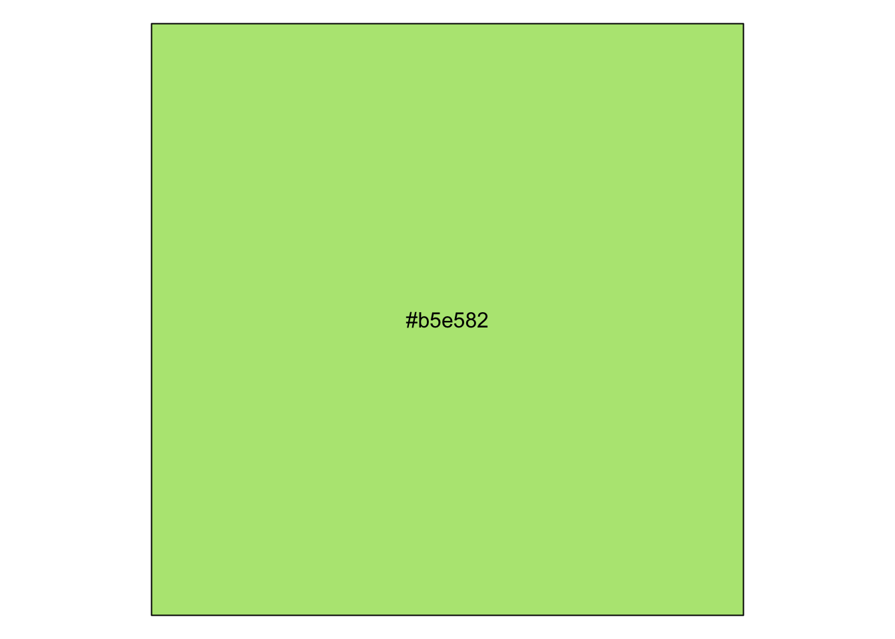

Code
# loading in packages
library(ggplot2)
library(tibble)
library(ggthemes)
library(scales)
library(dplyr)Set Up:
# loading in packages
library(ggplot2)
library(tibble)
library(ggthemes)
library(scales)
library(dplyr)Exercise 1:
mpg %>%
ggplot(aes(hwy, cty, color = manufacturer, size = displ)) +
geom_point(show.legend = FALSE) +
coord_polar() +
theme_void() Exercise 2:
polar_art <- function(seed, n, palette) {
# set the state of the random number generator
set.seed(seed)
# data frame containing random values for
# aesthetics we might want to use in the art
dat <- tibble(
x0 = runif(n),
y0 = runif(n),
x1 = x0 + runif(n, min = -.2, max = .2),
y1 = y0 + runif(n, min = -.2, max = .2),
shade = runif(n),
size = runif(n)
)
# plot segments in various colours, using
# polar coordinates and a gradient palette
dat |>
ggplot(aes(
x = x0,
y = y0,
xend = x1,
yend = y1,
colour = shade,
size = size
)) +
geom_segment(show.legend = FALSE) +
coord_polar() +
scale_y_continuous(expand = c(0, 0)) +
scale_x_continuous(expand = c(0, 0)) +
scale_colour_gradientn(colours = palette) +
scale_size(range = c(0, 10)) +
theme_void()
}
polar_art(seed = 13, n = 111, palette = c("lightblue", "purple", "darkblue"))polar_art_new <- function(seed, n, palette) {
# set the state of the random number generator
set.seed(seed)
# data frame containing random values for
# aesthetics we might want to use in the art
dat <- tibble(
x0 = runif(n),
y0 = runif(n),
x1 = x0 + runif(n, min = -.2, max = .2),
y1 = y0 + runif(n, min = -.2, max = .2),
shade = runif(n),
size = runif(n)
)
# plot segments in various colours, using
# polar coordinates and a gradient palette
dat |>
ggplot(aes(
x = x0,
y = y0,
xend = x1,
yend = y1,
colour = shade,
size = size
)) +
geom_point(show.legend = FALSE) +
coord_polar() +
scale_y_continuous(expand = c(0, 0)) +
scale_x_continuous(expand = c(0, 0)) +
scale_colour_gradientn(colours = palette) +
scale_size(range = c(0, 5)) +
theme_void()
}
polar_art_new(seed = 13, n = 111, palette = c("lightblue", "purple", "darkblue"))
Exercise 3
# creating the random color palette generator
sample_canva <- function(seed = NULL) {
if(!is.null(seed)) set.seed(seed)
sample(ggthemes::canva_palettes, 1)[[1]]}
show_col(sample_canva())
show_col(sample_canva())
# exercise 3.2: creating a random color generator
sample_named_colours <- function(seed = INPUT){
colors(distinct = TRUE)}
# using polar art to showcase the random color generator
polar_art(seed = 13, n = 199, palette = sample_named_colours(seed = 2))
# exercise 3.3: picking 1 random color from 600
sample_canva2 <- function(seed = NULL) {
if(!is.null(seed)) set.seed(seed)
sample(unlist(ggthemes::canva_palettes), 1)[[1]]}
show_col(sample_canva2())
Exercise 4
# Exercise 4.1: testing flexibility of functions
sample_canva <- function(seed = NULL) {
if(!is.null(seed)) set.seed(seed)
sample(ggthemes::canva_palettes, 1)[[1]]
}
sample_data <- function(seed = NULL, n = 100){
if(!is.null(seed)) set.seed(seed)
dat <- tibble(
x0 = runif(n),
y0 = runif(n),
x1 = x0 + runif(n, min = -.2, max = .2),
y1 = y0 + runif(n, min = -.2, max = .2),
shade = runif(n),
size = runif(n),
shape = factor(sample(0:22, size = n, replace = TRUE))
)
}
polar_styled_plot <- function(data = NULL, palette) {
ggplot(
data = data,
mapping = aes(
x = x0,
y = y0,
xend = x1,
yend = y1,
colour = shade,
size = size)) +
coord_polar(clip = "off") +
scale_y_continuous(
expand = c(0, 0),
limits = c(0, 1),
oob = scales::oob_keep) +
scale_x_continuous(
expand = c(0, 0),
limits = c(0, 1),
oob = scales::oob_keep) +
scale_colour_gradientn(colours = palette) +
scale_size(range = c(0, 10)) +
theme_void() +
guides(
colour = guide_none(),
size = guide_none(),
fill = guide_none(),
shape = guide_none())}
# making plot exploring different values
dat1 <- sample_data(n = 1300, seed = 123)
dat2 <- sample_data(n = 20, seed = 1) |>
mutate(y0 = .3 + y0 * .6, y1 = .3)
polar_styled_plot(palette = sample_canva(seed = 6)) +
geom_segment(
data = dat1 |> mutate(size = size * 3.1)) +
geom_segment(
data = dat2 |> mutate(size = size / 7.6),
lineend = "round",
colour = "black") +
geom_point(data = dat2 |> mutate(size = size * 2),
colour = "white")# creating my own style of plot
my_styled_plot <- function(data = NULL, palette) {
ggplot(data = data, mapping = aes(x = x0, y = y0, xend = x1, yend = y1,
colour = shade, size = size)) +
coord_flip(clip = "off") +
scale_y_continuous( expand = c(0, 0), limits = c(0, 1), oob = scales::oob_keep) +
scale_x_continuous(expand = c(0, 0), limits = c(0, 1), oob = scales::oob_keep) +
scale_colour_gradientn(colours = palette) +
scale_size(range = c(0, 10)) +
theme_void() +
guides(colour = guide_none(),size = guide_none(), fill = guide_none(), shape = guide_none())}
my_styled_plot(palette = sample_canva(seed = 901)) +
geom_segment(data = dat1 |> mutate(size = size * 91)) +
geom_curve(data = dat2 |> mutate(size = size / 0.1),
lineend = "round",
colour = "white",
position = "jitter") +
geom_jitter(data = dat2 |> mutate(size = size * 69),
colour = "white")
Set Up:
#loading in packages
library(dplyr)
library(purrr)
library(tibble)
library(ggplot2)
library(ggthemes)
library(ambient)Exercise 1:
# random color palette generator
sample_canva <- function(seed = NULL) {
if(!is.null(seed)) set.seed(seed)
sample(ggthemes::canva_palettes, 1)[[1]]}
# define canvas
x_coords <- seq(from = 0, to = 1, length.out = 800)
y_coords <- seq(from = 0, to = 1, length.out = 800)
canvas <- long_grid(x = x_coords, y = y_coords)
# add gen_perlin() function to our canvas to add wavy patterns
canvas <- canvas |>
mutate(paint = gen_perlin(x, y, frequency = 10, seed = 1234))
# create art object with the canvas object made previously
art <- ggplot(canvas, aes(x, y, fill = paint)) +
geom_raster(show.legend = FALSE)
art
# plotting our art object with aesthetics
art +
theme_void() +
coord_equal()
art +
theme_void() +
coord_equal() +
scale_x_continuous(expand = c(0, 0)) +
scale_y_continuous(expand = c(0, 0)) +
scale_fill_gradientn(colours = sample_canva())
Exercise 2:
Exercise 1: